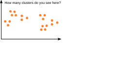
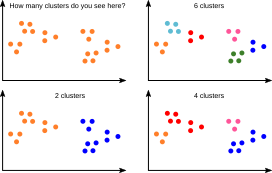
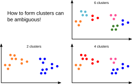
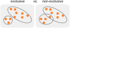
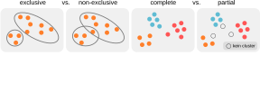
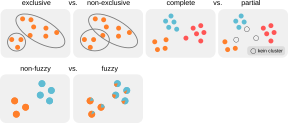
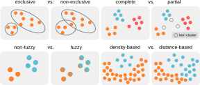
Different clustering methods lead to clusterings with different properties.
Algorithm: In each step, merge the two closest clusters.
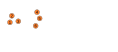
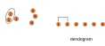
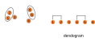
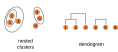
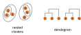
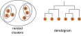
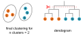
Perform a hierarchical clustering for the depicted data points based on their Euclidean distance and draw a dendrogram. What grouping do you get for n=3 clusters?

Starting from a given clustering, move data points to other clusters to find a better clustering.
To find the best clustering, the algorithm optimizes its objective function.
Example: "Sum of Errors".


The sum of squared errors is also called "Sum of Squared Errors" (SSE).
The sum of squared errors is also called "Sum of Squared Errors" (SSE).
an algorithm for finding clusters
Intuition: Starting from a given clustering, move data points to other clusters to reduce the Sum of Squared Errors (SSE).
- Propose a clustering.
- Calculate the mean per attribute & cluster.
- Calculate SSE over the entire clustering.
- For all data points: check if SSE can be reduced by changing cluster membership.
- Move the data point with the maximum reduction of SSE to the corresponding cluster.
- Calculate new means of all attributes for the giving and receiving cluster.
Repeat steps 4 to 6 until no further reduction in SSE happens.

{kind=link}
Silhouette Score: measures how similar an observation is to other observations in the same cluster (cohesion) compared to observations in other clusters (separation). Here, 1 is very good and -1 is very bad.
- ai: mean distance of observation i to all other observations in the same cluster.
- bi: mean distance to the next closest cluster.
- The silhouette score is the mean of si over all observations.


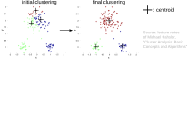
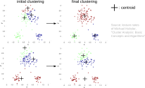
→ Repeat the clustering procedure several times with different initial clusterings.
K-means leads to unintuitive results when the clusters are ...

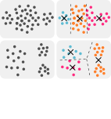

→ Density-based clustering (see for example DBSCAN)
- Different clustering methods produce different clusterings
- Hierarchical methods
- Partitioning methods (k-Means)
- Clusterings can have different properties.
- fine vs. coarse-grained
- exclusive vs. non-exclusive
- complete vs. partial
- density-based vs. distance-based